Pós-Instalação
Este é um guia com o passo a passo a ser realizado caso você tenha utilizado a W10_MOD_2026.iso para instalar o seu sistema operacional.
Após concluir a instalação do sistema e aplicar alterações básicas, como as atualizações de drivers, siga as instruções a seguir para configurarmos as principais ferramentas de trabalho e garantir o funcionamento adequado dos recursos utilizados nas estações de trabalho da Prefeitura Municipal de Três Marias.
Adicionar estação no domínio tresmarias.mg
Inicialmente renomeie a máquina de acordo com o setor de destino ou secretaria para a qual será enviada.
Acesse as configurações de sistema utilizando o atalho WIN + X, selecione Sistema, busque pela opção Renomear este computador ou Adicionar ao Domínio ou Grupo de Trabalho
Na janela eque se abrir escolha a opção Alterar, uma nova janela se abrirá.
Em Nome do computador aplique um nome como dito antes de acordo com sua destinação, em seguida no campo Membro de marque a opção Domínio e preencha com:
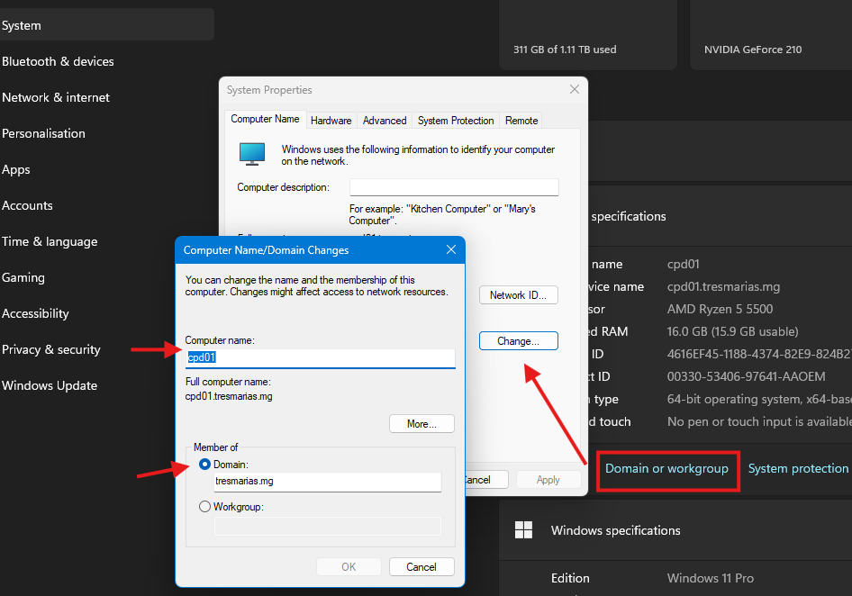
Em seguida utilize credenciais administrativas (usuário e senha) para prosseguir com a implantação da estação no domínio local.
Caso ocorra erro em encontrar o domínio pode ser necessário alterar as configurações de DNS nos adaptadores de rede da estação.
Para isto abra o painel de controle utilizando o atalho WIN + R pesquise por control, acesse a opção Central de Rede e Compartilhamento em seguida Alterar configurações de adaptador no menu lateral esquerdo.
Uma janela listando os adaptadores da estação será exibida, selecione o adaptador em uso na estação, clique com o botão direito e selecione Propriedades use a barra de rolagem para ir até Protocolo de Internet Versão 4 (TCP/IPv4), clique duas vezes sobre a opção para abrir suas configurações.
Na nova janela que se abre marque a opção Utilize os seguintes servidores DNS e preencha apenas o primeiro campo com:
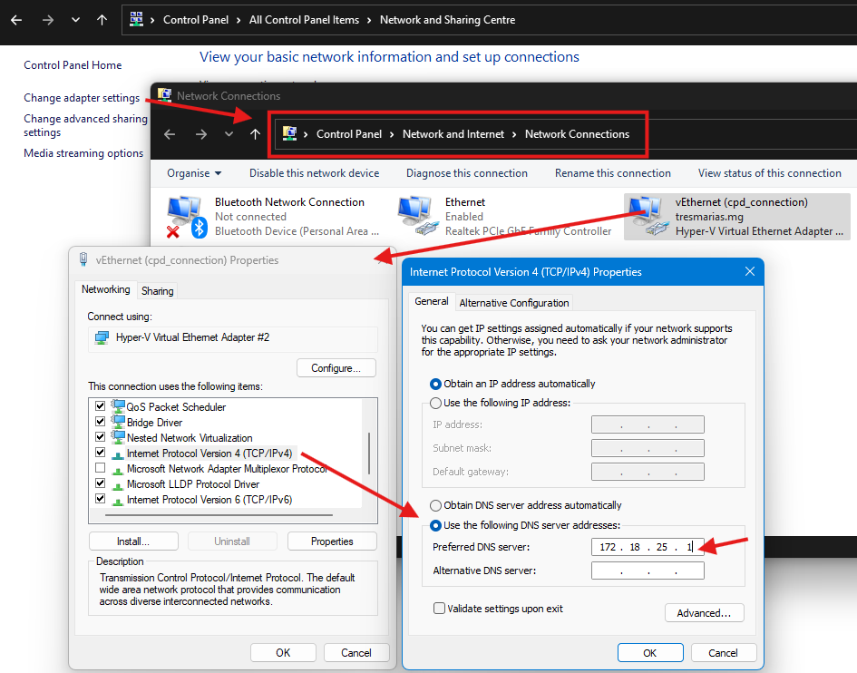
Em seguida clique em OK, Salve as alterações realizadas no adaptador e refaça o processo de adicionar a estação ao Domínio.
Após obter sucesso em adicionar a estação no domínio pode ser feito o mesmo procedimento para remover o DNS manual adicionado anteriormente.
Adicionar usuário como Administrador Local
Seguindo as recomendações do sistema Siap que veremos ao final deste manual, é importante adicionar o Grupo de usuários do Setor ou Secretaria ao qual a estação será destinada como Administrador local da máquina para garantir o acesso e funcionamento adequado do sistema.
Com isso também garantimos que usuários do mesmo setor possuam privilégios administrativos locais nesta estação para realizarem tarefas que por muita das vezes não exige intervenção técnica, como por exemplo execução e instalação de alguns softwares utilizados no dia a dia.
Para adicionarmos o grupo de usuários do setor como admonistrador local, utilize o atalho CTRL + X selecione a opção Gerenciamento de Computadores.
Na janela que se abrirá vá até Usuários e Grupos Locais em seguida Grupos, clique duas vezes sobre o grupo Administradores para abrir suas configurações.
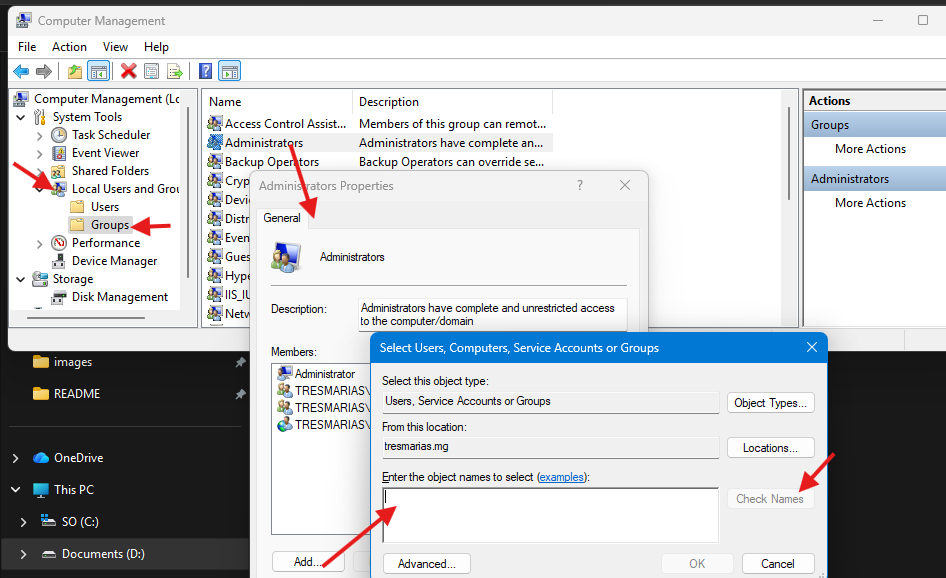
Em seguida clique em Adicionar, insira o nome do grupo na caixa de texto (EX: cpd), clique em Verificar Nomes para validar o nome do grupo, em seguida clique em Ok para finalizar a adição do grupo como administrador local da máquina.
Instalação do Agente de Rede Kaspersky
Na Área de trabalho você encontrará o executável Installer.exe com o ícone do Kaspersky execute-o clicando com o botão direito sobre ele e em executar como administrador, em seguida clique em Iniciar Instalação e aguarde a finalização.
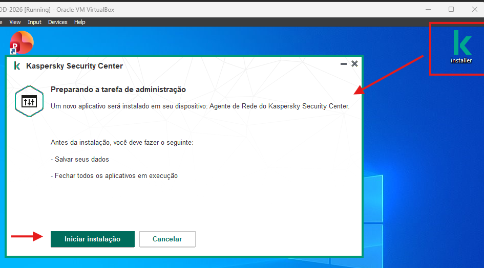
Após a reinicialização do computador o agente sempre ficará em execução no segundo plano.
Ativação do Windows e Office
Algumas máquinas já possuem sua chave de ativação original, aplique este passo apenas para estações que não possuam ativação oficial.
Utilize o atalho CTRL + X, selecione a opção Sistema, vá até as informações sobre Chave de Produto e Ativação, aqui você verá o estado de ativação da estação.
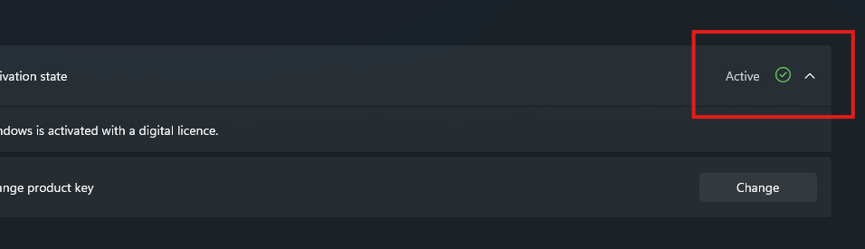
Após verificar o estado de ativação da máquina, caso a mesma não esteja ativada ou não possua etiqueta com chave oficial, prossiga com as instruções a seguir.
Execute no PowerShell como administrador:
O comando abrirá uma nova janela com algumas opções. Para realizar a ativação do Windows e do Office utilize as seguintes opções:
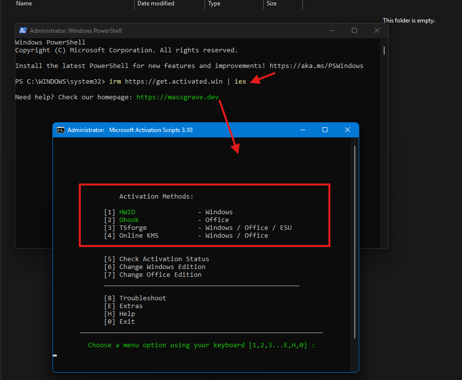
- Windows:
- Opção 1 (HWID).
- Office:
- Opção 2 (Ohook) em seguida a opção 1 (Install Ohook Office Activation)
Aguarde a conclusão e utilize a opção 0 para voltar ao menu inicial
Aguarde a conclusão em sequência utilize a opção 0 duas vezes para encerrar o script.
Ativação e configuração do RealVNC
O RealVNC está pré instalado na sua máquina, mas alguns procedimentos devem ser realizados para o perfeito funcionamento do software.
Para realizar a ativação abra o RealVNC Server e clique sobre o ícone de erro apresentado na barra superior. Selecione a ativação por chave/licença do RealVNC. Utilize uma das chaves abaixo para realizar a ativação do RealVNC.
Chaves de Ativação:
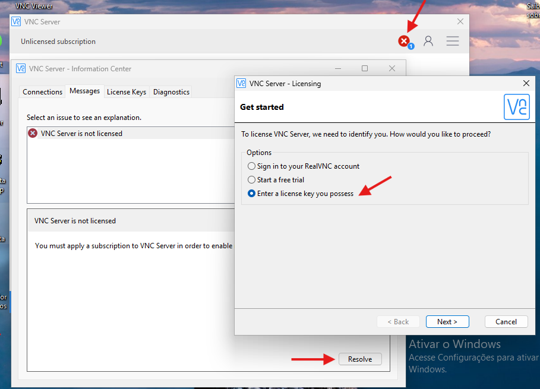
Após realizar a ativação seu RealVNC agora será necessário configurar o firewall da máquina para permitir a comunicação com a porta utilizada pelo serviço do RealVNC.
Para realizar a liberação no firewall abra o prompt de comando/cmd executando-o como Administrador.
Copie e cole a instrução a seguir no terminal:
Ao aplicar a configuração deve-se receber uma mensagem Ok, o que significa que agora o RealVNC aceitará as conexões.
Instalação e configuração do SIAP
Para acessar o instalador do Siap, abra o explorador de arquivos utilizando o atalho Win + E, na barra busca insira o endereço:
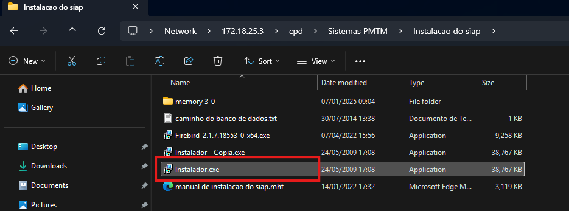
Copie para sua Área de trabalho o arquivo instalador.exe .
Para obter os arquivos de atualização necessários na instalação do Siap acesse também na barra de busca o endereço:
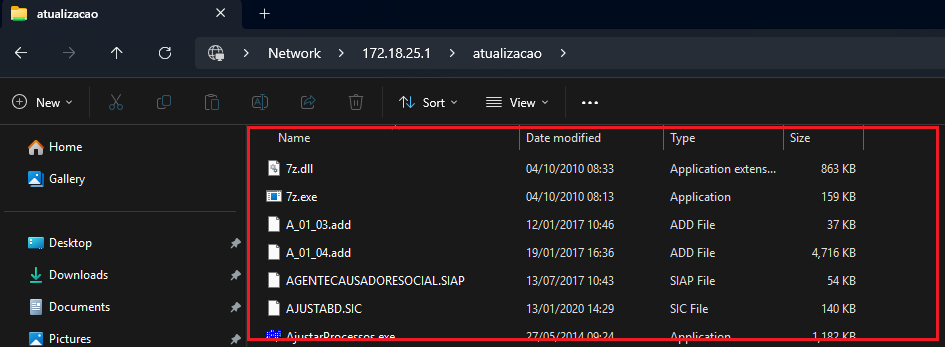
Selecione todos os arquivos do diretório e copie para uma nova pasta na sua Área de trabalho.
Para realizar a instalação execute o instalador.exe como administrador. Siga o instalador avançando e no fim clique em finalizar.
Uma nova janela com informações do Borland se abrirá, apenas clique em Ok para finalizar a instalação.
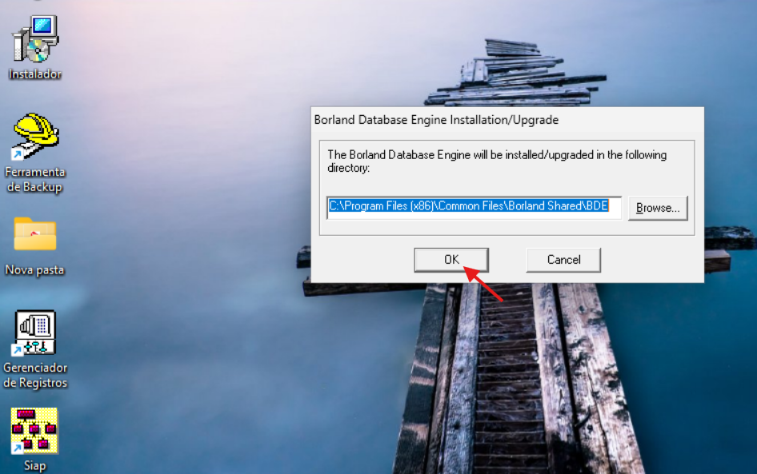
Acesse a pasta em que você copiou os arquivos de instalação, selecione todos os arquivos, copie-os para o diretório de instalação do Siap em:
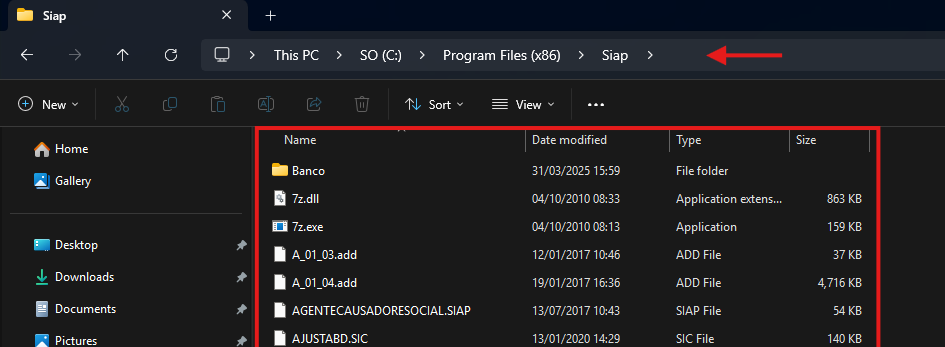
Finalizando a cópia volte um nível nas pastas para o diretório:
Vá até a pasta Siap clique com o botão direito sobre e vá para propriedades.
Na aba Segurança vá em Editar em seguida clique em Adicionar e adicione Todos na lista.
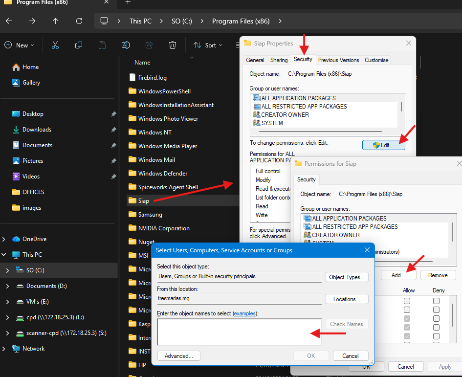
Retorne para a Área de Trabalho execute o Siap como administrador. Alguns erros irão aparecer, apenas clique em Ok em todos eles até chegar na exibição da janela de configuração.
Na janela inicial que abrirá copie e cole os seguintes caminhos nos respectivos campos:
Caminho do Banco de Dados:
Caminho do Executável:
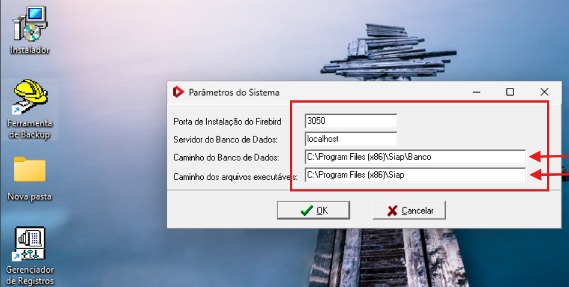
Salve as alterações.
O Siap iniciará novamente um loop de erros. Abra o gerenciador de tarefas com o atalho CTRL + SHIFT + ESC, procure a tarefa Login.exe e finalize a tarefa.
Volte para a Área de Trabalho e execute como administrador o Gerenciador de Registros, preencha com as seguintes informações.
Registros:
Servidor:
Nome do Servidor:
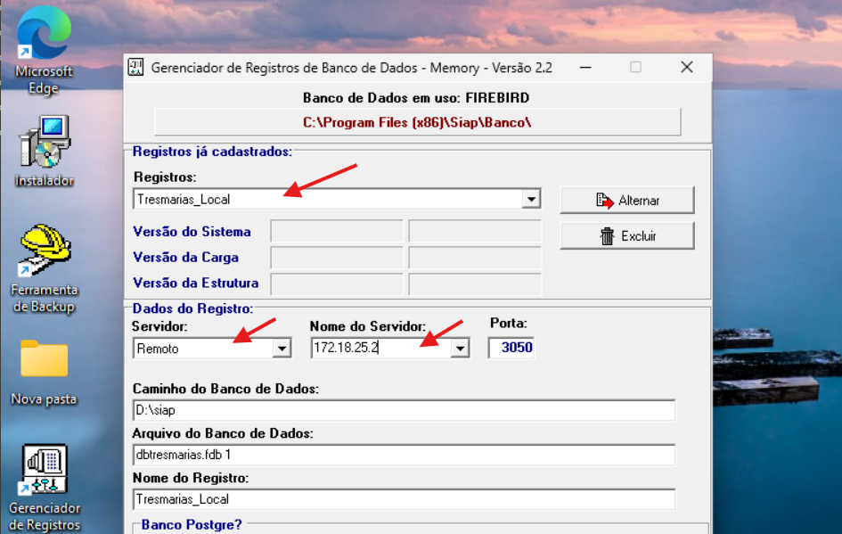
Salve as alterações clicando em Gravar ✔.
Com isso o Siap Estará completamente instalado. Agora finalizaremos com algumas configurações importantes para o funcionamento correto do sistema.
Primeiramente clique no ícone do Siap na Área de Trabalho com o botão direito, selecione propriedades, clique em alterar ícone e selecione o ícone que aparece, aplique e salve as alterações, repita o mesmo processo mais uma vez para o ícone ser anexado.
Agora Execute novamente o Siap como administrador, a tela de login se abrirá, realize o primeiro login com as credenciais:
Usuário:
Senha:
Entidade:
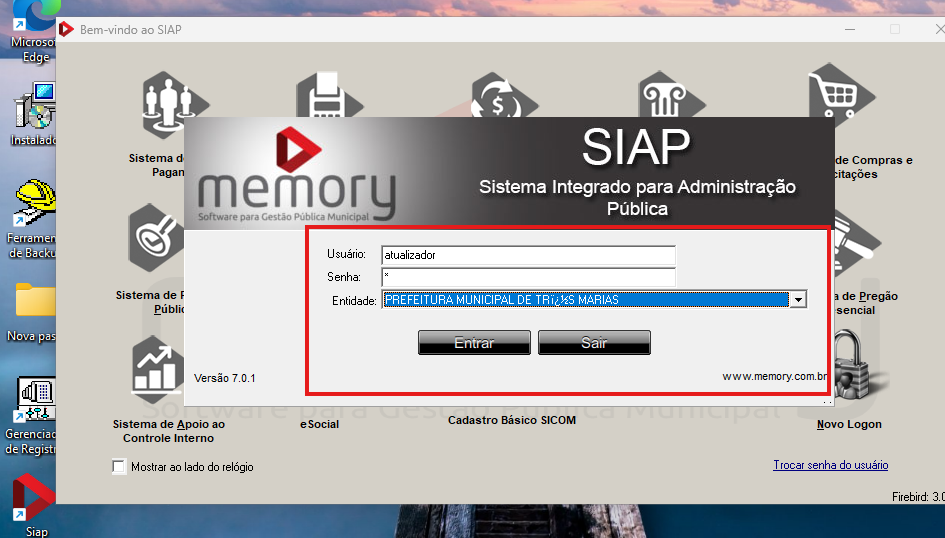
Na aba Computadores role a lista de registros até o final, encontre o nome do HOST no qual está sendo instalado o Siap, selecione-o clicando sobre e mude o campo Seleção do Setor para Windows 7 64 bits. Salve as alterações e feche o sistema.
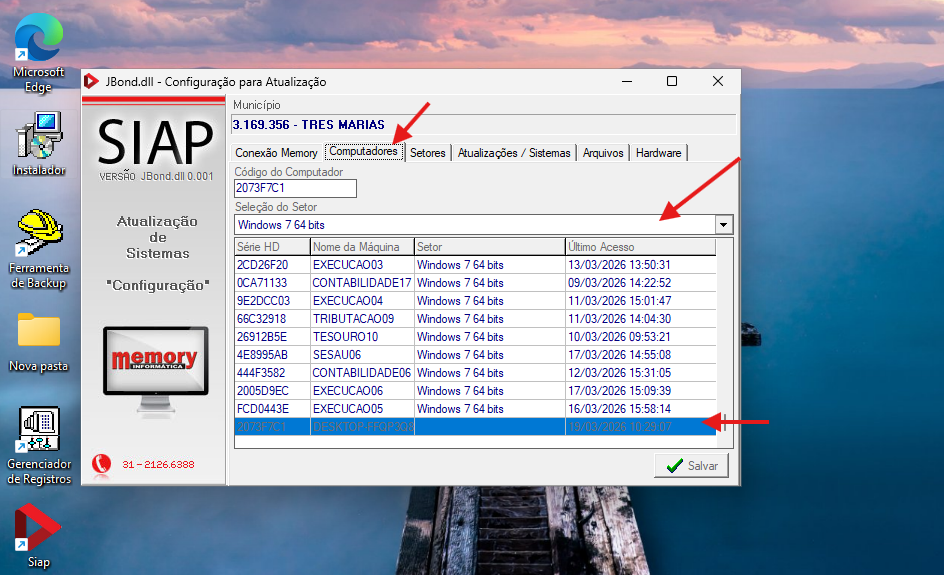
Para finalizarmos completamente precisamos agora configurar o Borland Database Engine, pois o módulo da contabilidade necessita deste recurso para funcionar adequadamente. Acesse o diretório abaixo para realizarmos as configurações finais.
Execute como administrador o BDEADMIN.EXE na aba Configurações expanda a opção Sistema, em seguida dê dois cliques em INIT e procure pelo campo SHAREDMEMLOCATION atribua o valor:
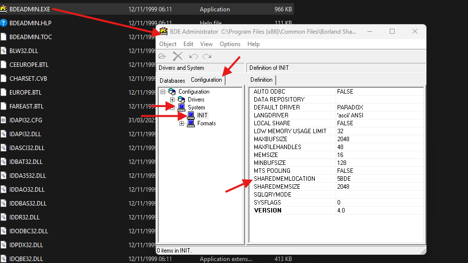
Pronto! Agora o computador está pronto para uso nas dependências da Prefeitura.